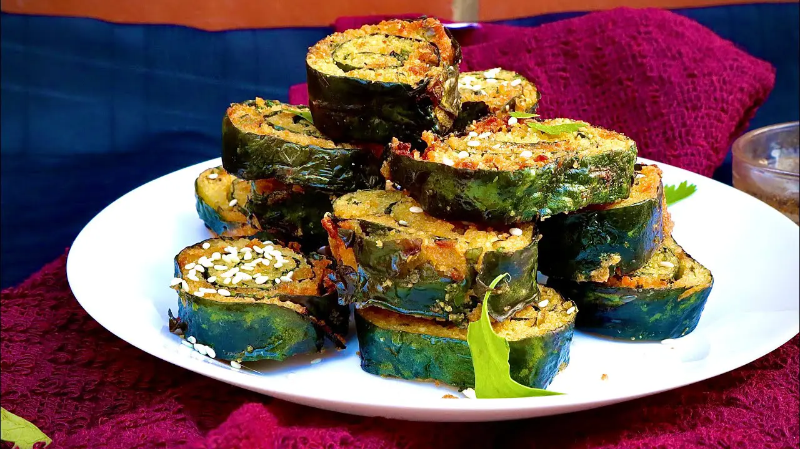

Delicious Gujarati Patra Recipe: Authentic Steamed Alu Vadi for Your Culinary Delight!

Description
Patra, also known as Alu Vadi or Patrode, is a popular Gujarati dish made with colocasia (taro) leaves stuffed with a spiced gram flour paste, rolled, steamed, and then sliced. Here's a traditional recipe for making Patra:
Ingredients
For the Patra rolls:
- 10-12 colocasia (taro) leaves (cleaned and stems removed)
- 1 cup gram flour (besan)
- 1/4 cup tamarind pulp
- 1 tablespoon jaggery (grated)
- 1/2 teaspoon turmeric powder
- 1 teaspoon red chili powder (adjust to your spice preference)
- 1 teaspoon ginger paste
- 1 teaspoon garlic paste
- 1 teaspoon sesame seeds
- 1/2 teaspoon cumin seeds
- A pinch of asafoetida (hing)
- Salt to taste
- Water as needed
- 2 tablespoons oil
For the Tempering (Tadka):
- 2 tablespoons oil
- 1 teaspoon mustard seeds
- 1 teaspoon sesame seeds
- A pinch of asafoetida (hing)
- 8-10 curry leaves
Steps
- Wash the colocasia (taro) leaves thoroughly, pat them dry, and trim the stems using a knife. Be careful as the leaves may have tiny thorns on the edges.
- In a mixing bowl, combine gram flour, tamarind pulp, grated jaggery, turmeric powder, red chili powder, ginger paste, garlic paste, sesame seeds, cumin seeds, asafoetida, and salt. Mix well to form a smooth paste.
- Lay one leaf flat on a clean, dry surface, with the shiny side facing down and the stem end towards you. Using your fingers or a spoon, spread a thin layer of the gram flour paste on the leaf, covering it evenly.
- Place another leaf on top of the first leaf, slightly overlapping. Repeat the process of applying the gram flour paste. Continue this process with 3-4 leaves until you have a layered stack.
- Gently and tightly roll the stacked leaves from the stem end to the tip, forming a cylindrical shape.
- Repeat steps 3 to 5 with the remaining leaves and the gram flour paste to make more rolls.
- Steam the prepared rolls in a steamer for about 25-30 minutes or until the gram flour paste is cooked and the leaves are tender. You can check the doneness by inserting a knife; it should come out clean.
- Once the Patra rolls are steamed, allow them to cool for a few minutes, then carefully slice them into round pieces of about 1/2-inch thickness.
- For the tempering (tadka), heat 2 tablespoons of oil in a pan. Add mustard seeds and let them splutter. Then, add sesame seeds, asafoetida, and curry leaves. Stir-fry for a few seconds until the seeds crackle and the curry leaves turn crispy.
- Add the sliced Patra pieces to the tempering and sauté gently for a couple of minutes until the pieces are lightly browned and crispy.
- Serve hot Patra slices as a delicious and nutritious snack or a side dish with green chutney.